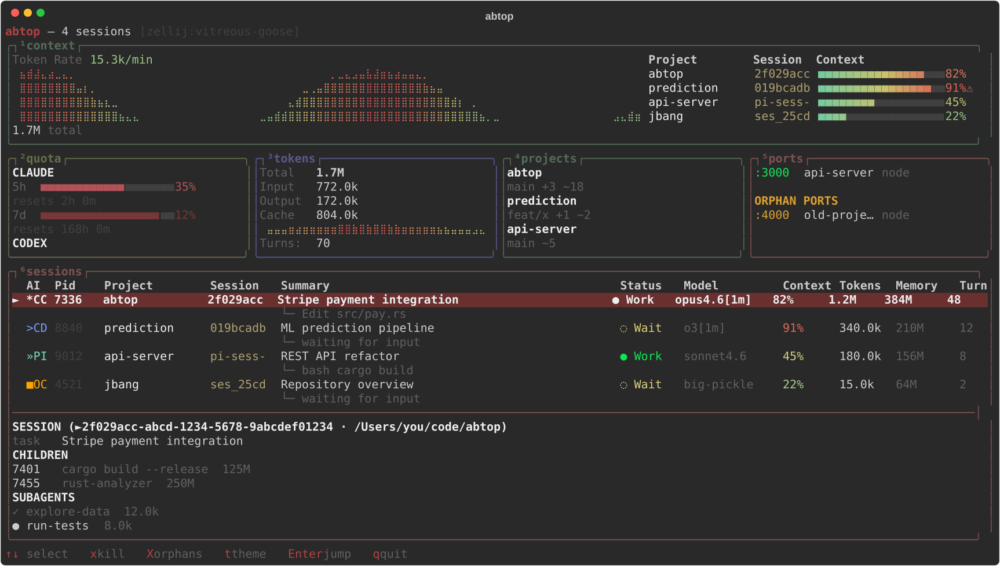

Like htop, but for your AI coding agents. See every session at a glance.

$ curl -Lo abtop https://github.com/maxandersen/jabtop/releases/download/early-access/abtop-macos-aarch64 $ chmod +x abtop
$ curl -Lo abtop https://github.com/maxandersen/jabtop/releases/download/early-access/abtop-linux-amd64 $ chmod +x abtop
Single binary, no JVM needed. ~50MB.
$ curl -Ls https://sh.jbang.dev | bash -s - app setup # install JBang if needed
$ jbang app install abtop@maxandersen/jabtop
Installs abtop command. JBang handles Java automatically.
Input, output, cache read/write per session. Sparkline history and per-turn breakdown.
Per-session context % with yellow/red warnings. Knows 200k vs 1M windows.
Claude 5h/7d quota gauges with reset countdown. Codex rate limits from session data.
Child processes with CPU, memory, and open ports. Orphan port detection when agents die.
Working, waiting, error, done — with current tool call displayed in real-time.
Press g to jump directly to the agent's tmux or zellij pane.
Per-project branch, added/modified file counts. See which agents are changing what.
All local reads. No network calls. Secrets auto-redacted. No API keys needed.
| Key | Action |
|---|---|
| ↑ / k | Select previous session |
| ↓ / j | Select next session |
| g | Jump to session pane (tmux / zellij) |
| x | Kill selected session (press twice) |
| X | Kill all orphan ports |
| t | Cycle theme |
| r | Force refresh |
| q | Quit |